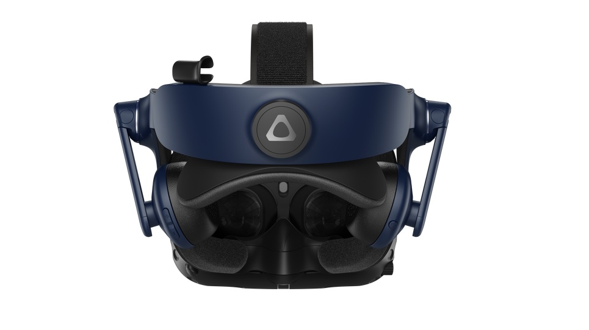
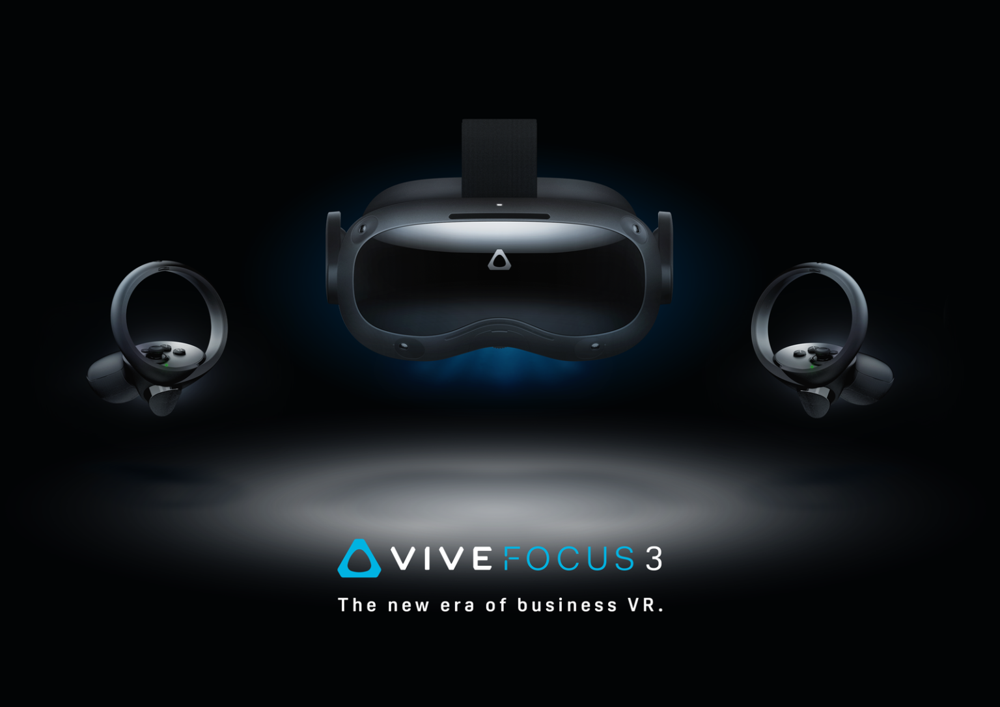

HTC anuncia novos headsets de realidade virtual da linha Vive, agora com resolução 5K

A Valve anunciou nesta terça-feira (11) dois novos dispositivos de realidade virtual (RV): o
Vive Pro 2, voltado para o consumidor final, e o Vive Focus 3, que por enquanto é de uso
exclusivo para empresas. Os aparelhos já entraram em pré-venda, com entrega prevista para junho
deste ano.
O Vive Pro de segunda geração se parece muito com o modelo antecessor, mas quase todas as
especificações básicas passaram por uma reformulação. O headset, fabricado pela HTC, agora traz
resolução de 5K (2,5K para cada olho), campo de visão mais amplo, de 120 graus, e taxa de
atualização de 120 Hz. Isso tudo combinado deve ajudar a diminuir a sensação de tontura e enjoo
que muitas pessoas enfrentam ao usar um dispositivo de realidade virtual.
Pela primeira vez em um óculos de RV, a HTC afirma ter trabalhado com a Nvidia e a AMD para
adicionar suporte para Display Stream Compression via DisplayPort 1.2, que é uma técnica de
compressão visual usada para reduzir a quantidade de largura de banda necessária para a saída de
vídeo sem praticamente nenhuma perda qualidade da imagem. A HTC ainda confirmou que o produto
mudou para uma tela com sub-pixels RGB para troca mais rápida, de imagens. Logo, o headset
consegue reproduzir gráficos mais nítidos e coloridos.
O Vive Pro 2 possui um botão prático para ajustar IPD (distância interpupilar) e alto-falantes
embutidos que suportam áudio espacial 3D, junto com uma faixa de cabeça renovada que oferece um
ajuste mais confortável e maior equilíbrio de peso. E em uma surpresa muito bem vinda, o
acessório agora tem como requisitos mínimos apenas um PC com placa gráfica Nvidia RTX 2080 ou
AMD Radeon 5000 — o que por si só é boa notícia, já que o aparelho não exige mais GPUs mais
recentes.
Agora as características não tão legais. O Vive Pro 2 ainda precisa de um fio ligado a um
computador para funcionar, a menos que você opte por um adaptador sem fio, que também é
compatível com o Vive Pro original. Além disso, o preço: US$ 800 (R$ 4.195 na conversão direta)
apenas pelo headset. Se optar por um kit com duas estações-base e dois controles adicionais, o
preço quase que dobra de valor para US$ 1,4 mil (R$ 7.340).
O Vive Focus 3 chega às lojas em 27 de junho.

O Vive Focus 3, por sua vez, destina-se principalmente a grandes corporações. Comparado ao Vive
Pro 2, o Focus 3 tem especificações bem mais interessantes.
Equipado com o processador Snapdragon XR2, o Vive Focus 3 é muito parecido com o Oculus Quest 2,
mas com ótica ainda melhor. Ele tem uma tela de 5K, taxa de atualização de 90 Hz, modo sem fio,
rastreamento de dentro para fora usando quatro câmeras na parte externa, alto-falantes
embutidos, modo de áudio privado e operação autônoma, o que significa que ele funciona de forma
independente, sem precisar de um computador por perto o tempo inteiro.
O Focus 3 também apresenta novos controles e um chassi com uma estrutura de liga de magnésio
que, segundo a HTC, é 20% mais leve e 500% mais resistente do que o plástico usado nos outros
modelos de headset. E ainda conta com um sistema de bateria substituível.
O Vive Focus 3 custará US$ 1,3 mil (R$ 6.820) e inclui garantia empresarial de dois anos, além
de um conjunto completo de novos aplicativos e suporte de software focado em negócios para
ajudar as empresas a fazerem a transição mais fácil da colaboração tradicional de escritório
para trabalhos em RV.
O Vive Focus 2 já está disponível para pré-venda e começa oficialmente a ser enviado em 4 de
junho.
Feito por: Sam Rutherford